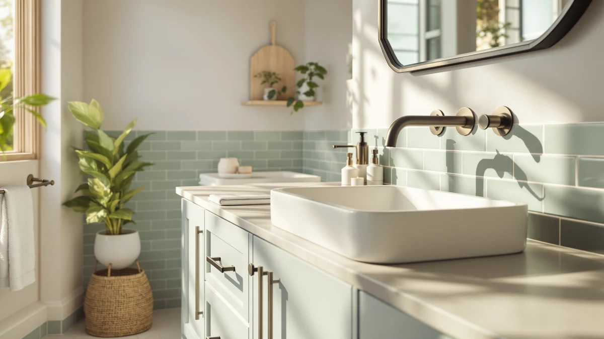

The Best 48-inch Vanity Tops (2026)
Prices and picks verified as of August 2026. Independent, reader-supported reviews.


Quick Answer
The WYRNOBRX 15 Inch Round is the best 48-inch vanity top pick for most budgets, since it finishes a flat 48-inch counter with a durable ceramic vessel sink for under $100. If you need a complete vanity with the sink and top already installed, the DELUXE LIVING 48 Inch White is the strongest all-in-one option in this comparison.
Our pick: WYRNOBRX 15 Inch Round Bathroom, $96.99 Check Price on Amazon
Bottom line: our top pick is the WYRNOBRX 15 Inch Round Bathroom Sink Above Counter Classic at $96.99. The best budget option is the DELUXE LIVING 60 Inch Bathroom Vanity with Sink at $1.
Things to Know Before You Buy
- Not every pick here is a countertop. The WYRNOBRX vessel sink and the Alaterre Lucca cabinet are built to pair with a separate top, while the DELUXE LIVING and SOLIDEE vanities already include the sink and top installed. Know which piece you're shopping for before you compare prices.
- Price ranges from $96.99 to $1,055.99 in this comparison. A ceramic vessel sink sits at the low end, and full farmhouse vanities with soft-close drawers and dovetail joinery sit at the top, so the spread reflects what's included, not size alone.
- "48-inch" describes the cabinet or top, not always the sink. The DELUXE LIVING 48 Inch White and the SOLIDEE both list a 48-inch width, while the Lucca is 36 inches and built to sit under a wider 48-inch vanity top you supply yourself.
- Soft-close hardware shows up on the pricier picks. The DELUXE LIVING vanities and the Alaterre Lucca all list soft-closing doors or drawers, a detail worth checking on any 48-inch vanity project since it protects MDF edges from daily slamming.
- Assembly requirements vary by pick. DELUXE LIVING ships fully assembled, while the SOLIDEE arrives in three packages that require self-assembly, including mounting two vessel sinks and their drain hardware.
The best 48-inch vanity tops have to do more than look good on a showroom shelf: they need a sink that actually fits the cutout, hardware that survives daily splashes, and a price that doesn't wreck a bathroom remodel budget. We looked at seven options for a 48-inch bathroom footprint, from a standalone ceramic vessel sink you pair with your own countertop to full vanities that arrive with the sink and top already fitted. Each one solves the 48-inch problem a different way, and the right pick depends on whether you're starting from a bare wall or replacing a single piece of an existing setup.
Most of the vanities here ship as complete units, cabinet, sink, and top in one box, so you're not hunting for a separate countertop that matches your cabinet's exact width. The DELUXE LIVING 48 Inch White and the SOLIDEE 48 inch Barn Door both fall into this category, and both list a 48-inch footprint that lines up with the size most buyers search for. The Alaterre Lucca goes the other direction: it's a 36-inch cabinet built to accept a separate top and sink basin, which matters if you already own a 48-inch quartz or granite slab and need only a cabinet underneath it.
Price spreads widely across this group, from $96.99 for the WYRNOBRX vessel sink to slightly more than $1,055 for the DELUXE LIVING 60 Inch. That gap isn't a mistake. A vessel sink and a full farmhouse vanity with soft-close drawers solve different problems, and we compared them on what each one includes, not on price alone. Below, we break down what each pick gets right, where it falls short, and which bathroom layout it actually fits.
Why You Should Trust Us
Best Bathroom Vanities covers one category of home fixture: the cabinets, tops, and sinks that make up a bathroom vanity. Ilane Tall has spent the past several years comparing vanity listings across price tiers, checking how stated dimensions translate into real wall and counter space. For this guide to the best 48-inch vanity tops, we pulled pricing, material, and included-hardware details directly from each product listing and checked them against the seller's own specifications. We don't run a paid testing lab and we don't invent expert quotes. We read the same listings you can, compare what's actually included, and tell you where a 48-inch pick earns its price and where it doesn't.
How We Picked
We started with one requirement: every product had to fit into a 48-inch vanity project, either as a 48-inch cabinet or top, or as a companion piece, like a vessel sink or a narrower cabinet, that a shopper building out a 48-inch layout would realistically pair with one. From there we compared listed prices, from $96.99 to $1,055.99, to cover a real range of budgets instead of clustering near one price point. We checked what ships in the box for each listing, since a vanity with the sink and top already installed and a bare vessel sink solve different parts of the same project. We also noted hardware details that affect long-term durability, soft-close doors, dovetail drawer joints, and adjustable feet, since those are the details that separate a vanity that holds up for a decade from one that doesn't. We excluded listings with vague or missing dimensions, since a 48-inch vanity top project depends on knowing the exact footprint before you order.
How We Compared
Comparing a bathroom vanity before it ships to your house means comparing specifications, not testing a finished piece in a showroom. For each pick, we checked the listed width against the 48-inch target and flagged which ones are true 48-inch pieces versus companion products meant to pair with a top you already own or plan to buy separately. We compared included hardware, drawers, doors, sinks, faucets, and drains, line by line, since two vanities at a similar price can include markedly different amounts of hardware. We also compared material claims, MDF, solid wood, engineered stone, and ceramic, against what each manufacturer lists in its own specifications, and we priced each pick against the others in this guide to see which one delivers the most for a 48-inch bathroom footprint at its price point.
Our Picks

WYRNOBRX 15 Inch Round Bathroom
What we like
- At $96.99, it's the cheapest way to finish a 48-inch vanity top in this comparison
- Sits above the counter rather than requiring a cutout, so it works with a flat slab you already own
- Glazed ceramic finish resists stains and soap scum according to the manufacturer's listing
- Includes a pop-up drain, so you're not sourcing that piece separately
Flaws but not dealbreakers
- No faucet included, so budget for one separately before you can use it
- At 15 inches round, it needs a generously sized 48-inch top to look proportional rather than crowded
- Above-counter vessel sinks sit higher than a standard drop-in, which changes counter height for shorter household members
| Material | MDF / engineered wood |
| Size | One Size |
The WYRNOBRX 15 Inch Round is a white ceramic vessel sink, not a full vanity, and that's exactly why it's our pick for shoppers focused on the best 48-inch vanity tops rather than a whole cabinet swap. It sits above the counter instead of dropping into a cutout, so it pairs with a 48-inch top you already own, whether that's quartz, granite, or laminate, without any modification beyond a single drain hole. At $96.99, it's the least expensive way in this comparison to put a finished sink on a bare or newly installed 48-inch top.
The listing includes a pop-up drain, which saves a separate purchase, but it doesn't come with a faucet, so factor that into your total cost before you buy. The ceramic construction is fired at high temperature according to the manufacturer, meant to resist cracking and yellowing over years of daily use, and the glazed surface wipes clean with a damp cloth rather than needing scrubbing. Because it mounts above the counter, it also sits higher than a standard drop-in sink, worth checking against your mirror height and any wall-mounted fixtures before you commit to the layout.

DELUXE LIVING 48 Inch White
What we like
- Ships as a complete 48-inch unit, cabinet, apron farm sink, and top, so there's no separate top to source or match
- Six drawers plus a cabinet give it more storage than any other pick in this comparison
- Soft-closing doors and dovetail drawer joints point to hardware built for daily use, not appearance alone
- Listed as no assembly required, which cuts installation time compared with the RTA options here
Flaws but not dealbreakers
- At $1,019.99, it's more than ten times the price of the WYRNOBRX vessel sink pick
- The farmhouse apron-front sink style won't suit every bathroom's design
- A fully assembled 48-inch unit is heavier and bulkier to maneuver into a bathroom than a flat-packed cabinet
| Material | MDF / engineered wood |
| Size | 48 Inch |
The DELUXE LIVING 48 Inch White is the closest thing in this comparison to a true one-box solution for the best 48-inch vanity tops: cabinet, top, and a single apron farm sink, all in the listed 48-inch width, with no separate top to source. Six drawers and a cabinet behind soft-closing doors give it more built-in storage than any other pick here, which matters if the vanity is also doing double duty as the bathroom's main storage.
The listing specifies dovetail drawer construction, a detail that typically holds up better under repeated opening and closing than simple butt joints, and the manufacturer lists it as requiring no assembly, which trims installation time considerably compared with the RTA cabinets elsewhere in this guide. The tradeoff is price: at $1,019.99, it's the most expensive full vanity in this comparison after the 60-inch DELUXE LIVING model, and the farmhouse apron-front sink is a distinct enough look that it's worth confirming it matches your bathroom's style before ordering.

Lucca Wood Bathroom Vanity Cabinet
What we like
- At $251.78, it costs a fraction of the fully assembled 48-inch vanities in this comparison
- Backed by Alaterre Furniture, a maker with more than 30 years in wood furniture construction
- Soft-close doors and drawer plus adjustable height levelers make for a more forgiving install on an uneven bathroom floor
- A large bottom drawer adds storage beyond what the 36-inch footprint might suggest
Flaws but not dealbreakers
- It's a 36-inch cabinet, not a full 48-inch piece, so it needs a wider top to actually deliver a 48-inch vanity result
- No sink or top included, which adds cost and a second purchase most other picks here skip
- Buyers have to confirm their chosen top's cutout matches the cabinet's listed 36-inch by 21.5-inch top dimensions
| Material | MDF / engineered wood |
| Size | 36 Inch |
The Lucca from Alaterre Furniture takes a different approach to the best 48-inch vanity tops question: instead of selling you a finished 48-inch unit, it sells the cabinet and leaves the top and sink basin up to you. At $251.78, it's built to accommodate a 36-inch-wide by 21.5-inch-deep top with a single center-set sink basin, which means it works best for buyers who already have a specific 48-inch or wider top picked out and want a cabinet that won't compete with it stylistically.
Alaterre has built wood furniture for more than three decades according to the listing, and the Lucca reflects that with soft-close doors and a drawer plus adjustable height levelers, a detail that matters more than it sounds on a bathroom floor that isn't perfectly level. The large bottom drawer adds real storage despite the cabinet's narrower 36-inch footprint. The catch is straightforward: you're buying a cabinet, not a complete vanity, so budget for a separate top and sink basin, and confirm the top you choose actually matches the Lucca's listed dimensions before you order both pieces.

24 Inch Mid-Century Modern Bathroom
What we like
- At $157.99, it's the second-cheapest pick in this comparison after the vessel sink
- Ornate carved legs and antique drop bail pulls give it a vintage look that most modern MDF vanities skip
- Open-back design leaves plumbing access clear, which simplifies installation around existing supply lines
- Glossy ceramic sink includes an anti-spill design according to the listing
Flaws but not dealbreakers
- At 24 inches, it's exactly half the width of a 48-inch vanity, so it won't work as a direct swap for a wider space
- The vintage wave design and black finish are a distinct style that won't suit a minimalist or farmhouse bathroom
- Only two drawers and one open shelf, less storage than the cabinet-heavy picks in this comparison
| Material | MDF / engineered wood |
| Size | 24.00"L x 18.30"W x 34.00"H |
The FUvellamo 24 Inch Mid-Century Modern is the budget outlier in this roundup of the best 48-inch vanity tops: at $157.99, it costs less than any full vanity here except the vessel sink, but its 24-inch width means it's built for a smaller bathroom rather than a direct 48-inch replacement. The carved legs and antique drop bail pulls give it a vintage character that none of the plainer MDF cabinets in this comparison try to match.
Its open-back design leaves plumbing access clear during installation, a practical detail that can save time if you're working around existing supply lines rather than roughing in new ones. The glossy ceramic sink includes an anti-spill design per the manufacturer, which helps contain everyday splashes. Two drawers and a single open shelf mean less storage than the cabinet-forward picks in this guide, and the black vintage finish is distinct enough that it's worth confirming it fits your bathroom's overall style before you buy, especially if you're aiming for a true 48-inch vanity top look rather than a smaller accent piece.

SOLIDEE 48 inch Barn Door
What we like
- Includes two blue boat glass vessel sinks, two faucets, and two pop-up drains, more hardware than any other pick in this comparison
- The sliding barn door adds a farmhouse design detail while keeping storage access easy in a tight bathroom layout
- At 48 inches wide, it matches the target footprint directly, unlike the narrower cabinets in this guide
- Six drawers add meaningful storage alongside the pedestal-style cabinet design
Flaws but not dealbreakers
- Self-assembly is required, and the listing notes it ships in three separate packages that may arrive on different days
- At $499.90, it costs roughly five times the FUvellamo budget pick
- Two vessel sinks and two faucets mean twice the plumbing hookups of a single-sink vanity
| Material | MDF / engineered wood |
| Size | 48" |
The SOLIDEE 48 inch Barn Door stands out among the best 48-inch vanity tops in this comparison for one reason: it's a genuine double-sink setup at the full 48-inch width, with two blue boat glass vessel sinks, two faucets, and two pop-up drains included. At $499.90, it sits in the middle of this group's price range, well below the fully assembled DELUXE LIVING vanities but above every cabinet-only option here.
The sliding barn door is more than a style statement. It keeps the six-drawer storage behind it accessible without swinging cabinet doors into a tight bathroom walkway, a real consideration in a 48-inch space shared by two sinks. The tradeoff is assembly: the listing specifies self-assembly across three separate packages covering the vanity body, the two sinks, and the plumbing hardware, so plan for build time and the possibility that packages arrive on different days before the bathroom is usable.

Takywep 30Inch Vanity with Sink
What we like
- At $149.99, it's the least expensive complete vanity with an included sink in this comparison
- Waterproof construction and an overflow sink design target durability against daily water contact
- One large storage drawer keeps counter clutter down despite the compact 30-inch footprint
- Modern styling is neutral enough to fit most existing bathroom decor without clashing
Flaws but not dealbreakers
- At 30 inches, it's well short of a 48-inch footprint and won't work as a direct replacement in a wider space
- Only one storage drawer, less than the multi-drawer vanities in this comparison
- Freestanding design means floor space underneath isn't usable the way a wall-mounted layout would allow
| Material | MDF / engineered wood |
| Size | 30" W |
The Takywep 30Inch Vanity with Sink isn't a 48-inch piece, but it earns its spot in this comparison of the best 48-inch vanity tops as the cheapest fully finished alternative for bathrooms that simply don't have 48 inches of wall space to work with. At $149.99, it undercuts every other complete vanity here, including the WYRNOBRX vessel sink once you factor in the faucet that pick still requires.
The listing notes waterproof construction and an overflow sink design meant to prevent spills from damaging the cabinet over time, a detail worth checking on any vanity that sits in a room with daily water exposure. One large storage drawer helps with counter clutter, though it's less storage than the multi-drawer options in this guide. The modern grey finish is neutral enough to slot into most existing bathrooms, but the 30-inch width means it's a compromise pick for anyone whose project specifically calls for a 48-inch vanity top.

DELUXE LIVING 60 Inch Bathroom
What we like
- Engineered stone countertop offers more stain and wear resistance than the MDF-topped cabinets in this comparison, according to the listing
- Two cabinets and five soft-closing dovetail drawers deliver the most storage of any single pick here
- Adjustable feet help level the vanity on uneven bathroom flooring
- MDF and yellow poplar wood construction targets long-term stability over MDF alone
Flaws but not dealbreakers
- At $1,055.99, it's the most expensive pick in this comparison
- At 60 inches, it's a foot wider than the 48-inch target most shoppers in this guide are searching for
- The green finish is a bolder color choice than the neutral tones on most other picks here
| Material | MDF / engineered wood |
| Size | 60 Inch |
The DELUXE LIVING 60 Inch is the upgrade option in this roundup of the best 48-inch vanity tops, included for shoppers whose bathroom has room to spare beyond the 48-inch target. At $1,055.99, it's the priciest pick here, but the listing backs that price with an engineered stone countertop, a material the manufacturer says resists stains and wear better than the MDF tops found on the more affordable vanities in this comparison.
Two cabinets and five soft-closing dovetail drawers give it the most storage capacity of any pick in this guide, and the MDF and yellow poplar wood construction is aimed at long-term stability rather than surface appearance alone. Adjustable feet make it easier to level on a bathroom floor that isn't perfectly flat. The obvious tradeoff is size: at 60 inches, it's a foot wider than the 48-inch footprint most of this guide focuses on, so measure your wall space carefully before treating this as a drop-in replacement for a 48-inch vanity.
Quick Comparison
| Product | Material | Price | Rating | Best for | Get it |
|---|---|---|---|---|---|
| WYRNOBRX 15 Inch Round Bathroom | MDF / engineered wood | $96.99 | 4 | Cheapest pick, pairs with any flat top | View on Amazon → |
| DELUXE LIVING 48 Inch White | MDF / engineered wood | $1,019.99 | 4 | Full 48-inch farmhouse vanity, sink included | View on Amazon → |
| Lucca Wood Bathroom Vanity Cabinet | MDF / engineered wood | $251.78 | 4 | Bare cabinet, pairs with a top you buy separately | View on Amazon → |
| 24 Inch Mid-Century Modern Bathroom | MDF / engineered wood | $157.99 | 4 | Budget vintage-style vanity, compact 24-inch footprint | View on Amazon → |
| SOLIDEE 48 inch Barn Door | MDF / engineered wood | $499.90 | 4 | 48-inch double-sink vanity, barn door style | View on Amazon → |
| Takywep 30Inch Vanity with Sink | MDF / engineered wood | $149.99 | 4 | Cheapest full vanity with sink, compact 30-inch size | View on Amazon → |
| DELUXE LIVING 60 Inch Bathroom | MDF / engineered wood | $1,055.99 | 4 | 60-inch upgrade pick, engineered stone top included | View on Amazon → |
What's the standard sink cutout size for a 48-inch vanity top?
Most 48-inch vanity tops use a single sink bowl centered on the counter, though double-sink 48-inch layouts, like the SOLIDEE Barn Door in this guide, are also common.
Can you use a vessel sink on any 48-inch vanity top?
Generally yes, since a vessel sink like the WYRNOBRX pick in this guide sits above the counter and only needs a hole for the drain, not a full cutout.
The Competition
The two DELUXE LIVING vanities compete directly with each other on width alone: the 48 Inch White and the 60 Inch Bathroom share the same soft-close, dovetail-drawer construction, but the 60-inch model adds an engineered stone top and roughly a foot of extra width for about $36 more. If your wall space tops out at 48 inches, the smaller model is the one to order; the 60-inch version only makes sense with room to spare.
The Lucca cabinet and the SOLIDEE Barn Door both target the 36-to-48-inch range but solve it differently. The Lucca is a bare 36-inch cabinet at $251.78 that expects you to supply a separate top, while the SOLIDEE is a complete 48-inch double-sink unit at $499.90 with everything included. If you already own a top, the Lucca is the cheaper path; if you're starting from scratch and want two sinks, the SOLIDEE does more of the work for you.
The FUvellamo 24-inch and Takywep 30-inch vanities both sit well under the 48-inch target, and we kept them in this comparison as budget-friendly alternatives for smaller bathrooms rather than as direct 48-inch competitors. Neither one should be your pick if your project specifically calls for a full 48-inch footprint.
Across all seven, the WYRNOBRX 15 Inch Round remains the strongest pick for anyone assembling the best 48-inch vanity tops on a budget, since it finishes an existing or newly purchased 48-inch top for less than $100 without locking you into a specific cabinet style.
Frequently Asked Questions
What's the standard sink cutout size for a 48-inch vanity top?
Most 48-inch vanity tops use a single sink bowl centered on the counter, though double-sink 48-inch layouts, like the SOLIDEE Barn Door in this guide, are also common. If you're pairing a separate top with a bare cabinet, like the Alaterre Lucca, confirm the top's cutout matches your chosen sink's mounting dimensions before you order either piece.
Can you use a vessel sink on any 48-inch vanity top?
Generally yes, since a vessel sink like the WYRNOBRX pick in this guide sits above the counter and only needs a hole for the drain, not a full cutout. That makes it compatible with most flat 48-inch tops, whether the material is quartz, granite, or laminate, as long as there's enough clearance beneath any mirror or medicine cabinet for the sink's added height.
Do 48-inch vanities always come with the sink and top included?
No. In this comparison, the DELUXE LIVING and SOLIDEE vanities ship with the sink and top already installed, while the Alaterre Lucca is sold as a bare cabinet built to accept a top and sink basin you buy separately. Always check a listing's included-hardware details before assuming a 48-inch vanity comes complete.